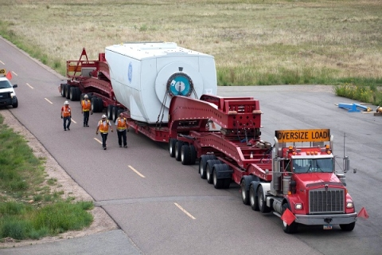

Transportation Worker
| Position Title | Transportation Worker |
| Alternate Title(s) | Railroad worker, truck driver, driver, long-haul truck driver, water transportation officer or engineer |
| Education & Training Level | Bachelor’s degree generally not expected |
| Education & Training Level Description | Transportation workers’ education and training requirements vary by the type of job whether it is truck, rail, or water transportation. Heavy and tractor-trailer truck drivers usually have a high school diploma and attend a professional truck-driving school. They must have a commercial driver’s license (CDL). Railroad occupations generally require a high school diploma and several months of on-the-job training. Water transportation officers and engineers usually must have a bachelor’s degree. Most water transportation jobs require the Transportation Worker Identification Credential (TWIC) from the U.S. Department of Homeland Security and a Merchant Marine Credential (MMC). |
| Brief job description | Transporting extremely large wind turbine components to remote areas takes a great deal of planning. When wind turbines need to be delivered to the wind farm, getting wind turbine components from the factory to the construction site requires the work of teams of logisticians, heavy-load truck drivers, and, occasionally, rail and water freight movers. |
| Preferred Level of Education | High school diploma or equivalent, with relevant transportation credentials (e.g., CDL) |
| Preferred Level of Experience | See the Bureau of Labor Statistics for more information. |
| Estimated/Expected Salary | .See the Bureau of Labor Statistics for more information. |
| Job Profile |
After land has been obtained and wind turbines have been manufactured, the turbines need to be delivered to the wind farm. Because of the extremely large size of some turbine components, transporting them is no easy feat. Most wind farms are in relatively remote areas of the country so it takes a great deal of planning to transport the turbine parts there in a cost-efficient, timely manner. Getting wind turbine components from the factory to the construction site requires the work of teams of logisticians, heavy-load truck drivers, and, occasionally, rail and water freight movers. Heavy and tractor-trailer truck drivers, freight train workers, and merchant mariners transport goods from one location to another ensuring on time and safe travel. Heavy and Tractor-Trailer Truck Drivers Most tractor-trailer drivers are long-haul drivers and operate trucks whose gross vehicle weight capacity—the combined weight of the vehicle, passengers, and cargo—exceeds 26,000 pounds. These drivers deliver goods over intercity routes, sometimes spanning several states or traveling to Mexico or Canada.
Most heavy and tractor-trailer truck drivers plan their own routes. They may use satellite tracking to help them plan. Before leaving, a driver usually is told a delivery location and time; but it is up to the driver to find a way to get the cargo there. A driver has to know which roads allow trucks and which do not. Drivers also must plan legally required rest periods into their trip. Some have one or two routes that they drive regularly and others drivers take many different routes throughout the country. Some heavy truck drivers transport hazardous materials, such as chemical waste, and so have to take special precautions when driving. Also, these drivers normally carry specialized safety equipment in case of an accident. Other specialized drivers, such as those carrying liquids, oversized loads, or cars, have to follow rules that apply specifically to them. Railroad Occupations Freight trains move billions of tons of goods around the country to ports where they are shipped around the world. Workers in railroad occupations drive trains, coordinate the activities of the trains, or operate signals and switches in the rail yard. Railroad occupations typically do the following:
All workers in railroad occupations work together closely. Locomotive engineers travel with conductors and, sometimes, brake operators. Locomotive engineers and conductors are in constant contact and keep each other informed of any changes in the condition of the train. Water Transportation Workers in water transportation occupations operate and maintain ships that take cargo and people over water. These ships travel to and from foreign ports across the ocean, to domestic ports along the coasts, across the Great Lakes, and along the country’s many inland waterways. Water transportation workers typically do the following:
These workers, sometimes called merchant mariners, work on a variety of ships. Some operate large deep-sea container ships to transport manufactured goods around the world. Others work on bulk carriers that move heavy commodities, such as coal or iron ore, across the oceans and over the Great Lakes. Still others work on both large and small tankers that carry oil and other liquid products around the country and the world. Others work on supply ships that transport equipment and supplies to offshore oil and gas platforms. Workers on tugboats help barges and other boats maneuver in small harbors and at sea. The specific compliment of mariners is dependent on U.S. Coast Guard regulations. There are also other workers on ships, such as cooks, electricians, and mechanics. |
| Job Skills |
|
| Resources |
Bureau of Labor Statistics: |